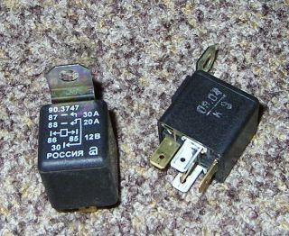

Несложная и весьма полезная доработка. По крайней мере, хуже точно не станет:-).
Статья описывает процесс разгрузки контактов 15/1 и 15/2 замка зажигания при помощи реле.
Заодно будет добавлен провод от аккумулятора к чёрному ящику.
Схема до переделки:
Схема после переделки:
Об этом много раз писалось, но вкратце:
Нам понадобятся:
Реле:

Гнёзда:
Значительную часть работы можно сделать дома.
Готовим провода:
И сооружаем вот такую косичку:
Это гнёзда укрупнённо:
Пояснения по цоколёвке.
Все скрутки пропаиваем, скрутку 3х толстых красных проводов - пропаиваем не до конца, нам её ещё скручивать дальше.
Отсоединяем массу от аккумулятора.
Делаем отвод от плюсовой клеммы аккумулятора. Провод толстый, длина - до чёрного ящика.
Конец отвода:
Прикручиваем нашу косичку к отводу:
Пропаиваем и изолируем:
Отвинчиваем чёрный ящик, выдёргиваем из него все штеккеры.
Находим штеккер Ш1 (он 8ми контактный, 1-й контакт пустой, в остальных есть провода).
Ко 2му контакту подходит толстый зелёный провод (у меня есть ещё тоненький красный, его может не быть).
Вынимаем его из разъёма:
И вставляем в гнездо одного из реле, к контакту 86:
Провод от контакта 87 этого реле вставляем на освободившееся место в Ш1:
Повторяем операцию с контактом 3 штеккера Ш1.
Вынимаем его из штеккера:
Вставляем в гнездо второго реле, к контакту 86, а провод от контакта 87 этого реле вставляем на освободившееся место в Ш1:
Прикручиваем землю под какой-нибудь из болтов под ЧЯ:
Находим штеккер Ш8 (он 8ми контактный, к нему идёт толстый провод от генератора)
Вставляем оставшийся толстый провод в контакт 5 этого разъёма. Это будет дополнительный провод питания к ЧЯ.
Заталкиваем реле и провода поглубже, чтобы ЧЯ встал на место.
Желательно как-то закрепить реле. Я не закрепил, теперь они там противно постукивают на кочках.
Подключаем все разъёмы к ЧЯ, проверяем, привинчиваем ЧЯ на место, наслаждаемся :-)
© AHTOXA, 2005-2006.